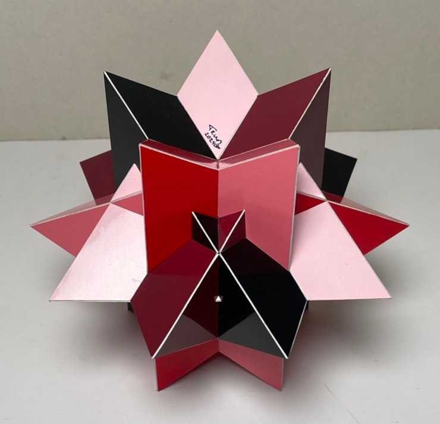
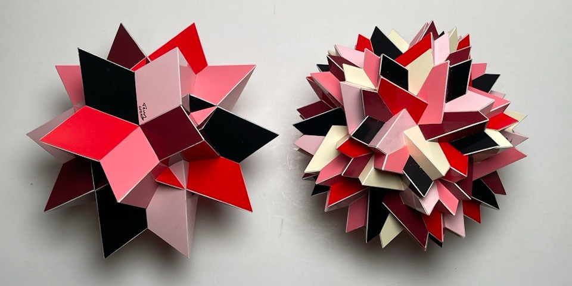

An Alternative Compound of Five Tetrahedra

This is a compound of five tetrahedra with a symmetry that has:
Because of the orthogonal mirror planes the symmetry also includes five half-turns,
and combining the four rotations with the mirror planes gives four rotary inversions.
This gives a total of 20 symmetries.
Each tetrahedron in the compound shares a 2-fold axis and one mirror with the final compound. Combining the half-turn with a mirror plane gives a rotary inversion that is shared as well. That means a total of four symmetries of a tetrahedron is shared with the final compound. Dividing the the total number of symmetries with this number leads to the fact that this results in a compound of five tetrahedra.
This is a rigid compound, which means you cannot rotate each tetrahedron around some axis in such a way that it still shares those symmetries. This is pretty obvious, since one tetrahedron shares a mirror plane, which won't be the case anymore as soon as you rotate one tetrahedron.
I built this model quite big; each tetrahedron has an edge length of 13.5 cm (around 5.3 inches). This wasn't just because of the tiny pieces, but also because this compound of thirty cubes is also a compound of six of the compound shown above, which was also the main reason to build this model in the beginning of 2024.
The image below shows both compounds next to eachother, where the compound on the left has the same orientation as the black subcompound of the model on the right.

Links
Last Updated
2024-04-09